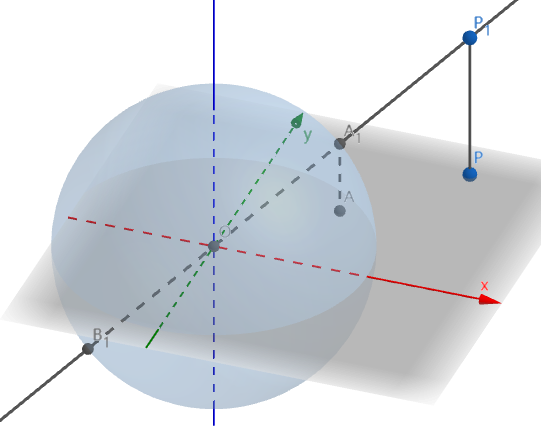
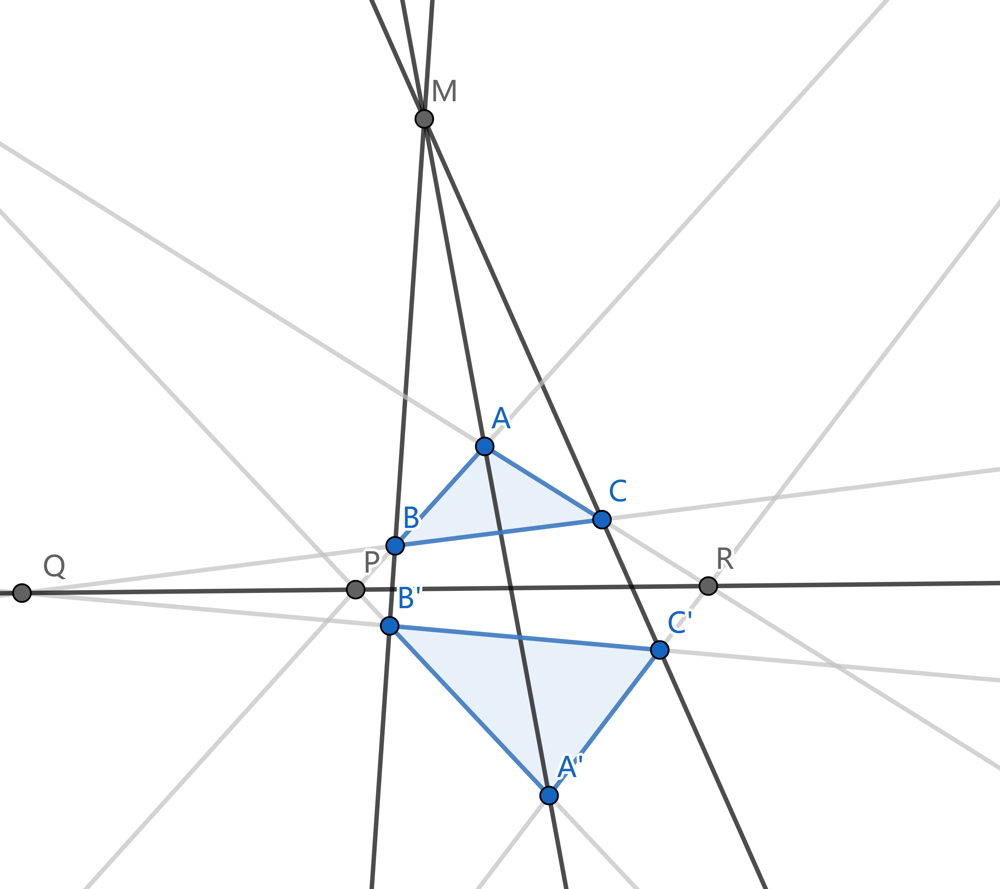
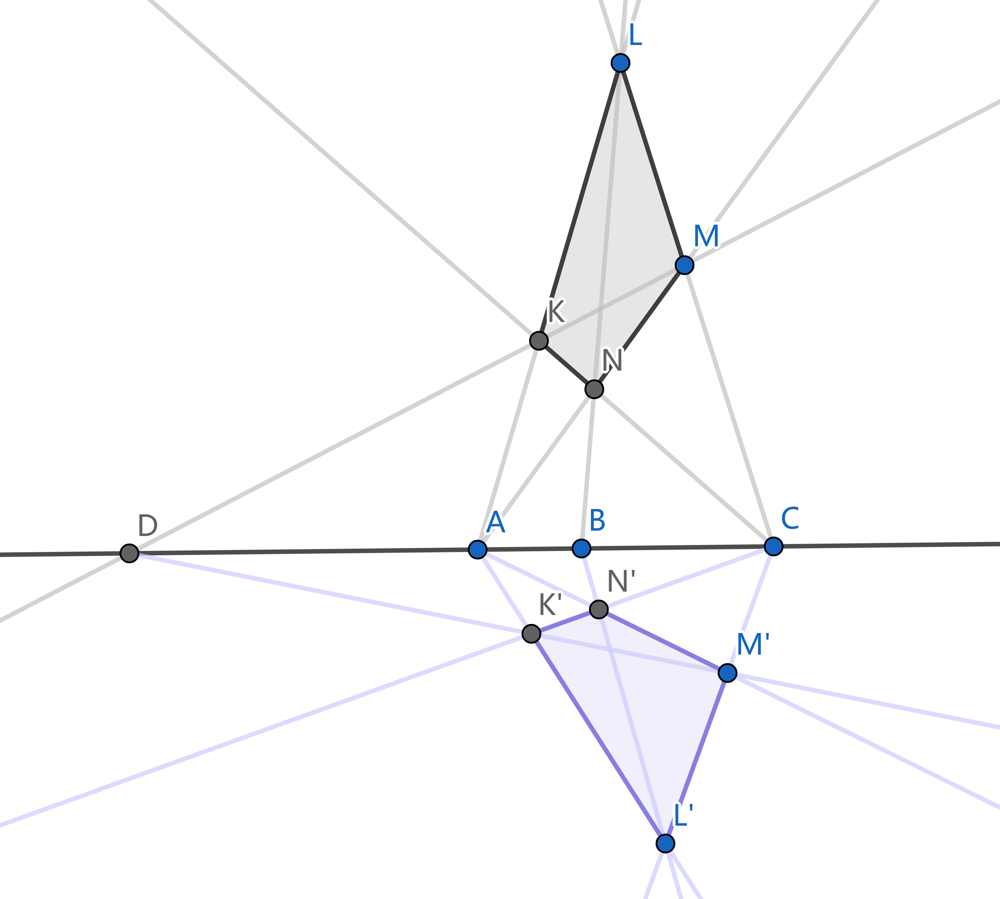
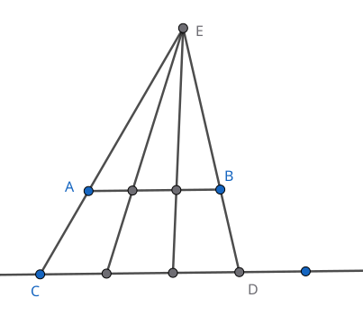
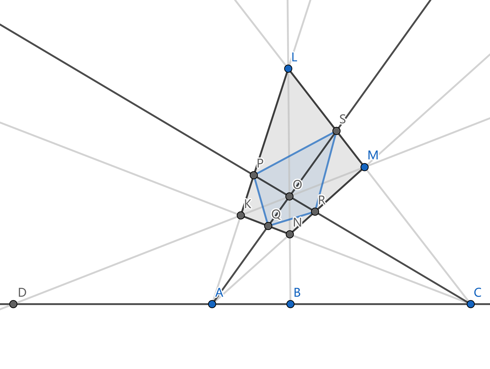
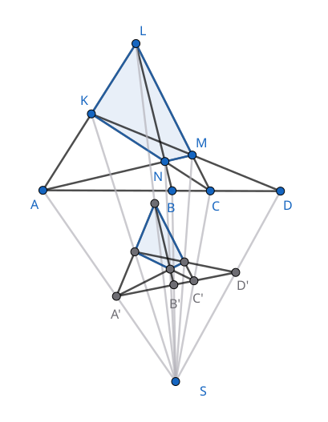
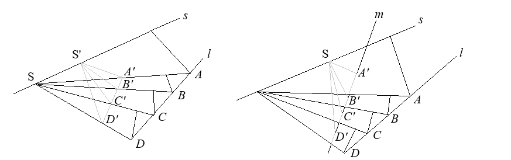
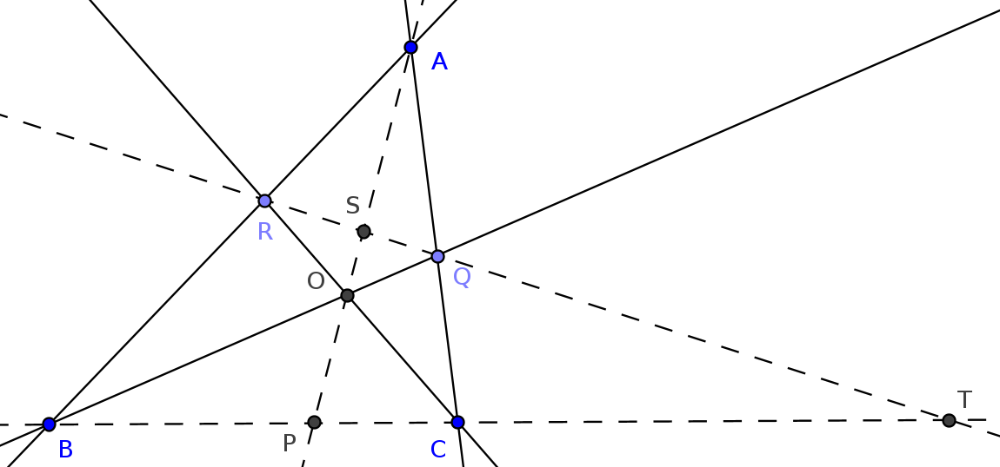
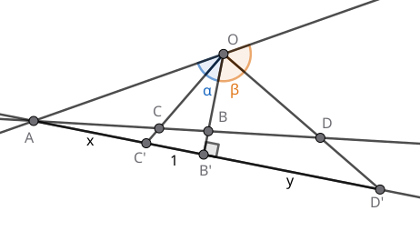

[《射影几何入门》]
我们的讨论将在射影平面 `P(RR^2)` 和射影空间 `P(RR^3)` 中进行. 射影平面和欧氏平面 `RR^2` 的区别在于, 它比 `RR^2` 多了无穷远点和无穷远直线的概念.
在 `RR^2` 上考虑直线 `l` 和直线外一点 `P`. 我们把过 `P` 的全体直线组成的直线束仍记为 `P`. 任取 `Q in l`, 则点 `Q` 完全决定了直线束中的一条直线 `PQ`. 然而直线束中有一条直线在 `l` 上找不到对应的点, 那就是与 `l` 平行的那条直线. 为弥补这个缺憾, 我们规定这条直线与 `l` 上的无穷远点对应, 从而在直线 `l` 与线束 `P` 之间建立了双射, 这个双射就称为直线与线束间的透视对应, 我们称这样的直线与线束是相互透视的.
注意, 要使双射成立, 我们引入的直线 `l` 的无穷远点必须唯一, 即不论向直线的哪个方向走到「尽头」, 最终都会到达同一个无穷远点. 为 `RR^2` 上的每条直线都引入一个无穷远点, 最后, 再规定所有这些无穷远点组成一条无穷远直线. 这样一来, 我们可以说, 射影平面上任意两条不同直线有唯一的交点; 特别地, 两条平行直线相交于无穷远点, 直线与无穷远直线的交点是它的无穷远点.
若干透视对应的复合称为射影对应, 比如平面上有多个直线与线束, 其中 `l_1` 与 `S_1` 透视, `S_1` 与 `l_2` 透视, `l_2` 又与 `S_3` 透视..., 那么所有这些直线与线束都是相互射影的.
射影平面上的直线又称为点列, 这个名字强调了直线是点的集合.
再看射影空间 `P(RR^3)`. 我们为 `RR^3` 的每条直线都引入一个无穷远点, 这些无穷远点全体组成一个无穷远平面. 无穷远平面和另一个平面的交点组成后者的无穷远直线. 于是, `P(RR^3)` 中任意两个不同平面有唯一的交线; 特别地, 两平行平面相交于无穷远直线. `P(RR^3)` 中直线与平面有唯一的交点; 当直线与平面平行时, 它们相交于直线的无穷远点. `P(RR^3)` 中两条不同直线有 0 或 1 个交点; 两平行直线相交于无穷远点, 两异面直线的无穷远点不相同, 因而没有交点.
我们专门讨论 `P(RR^2)` 的四种可视化.

在 `RR^3` 中, 将 `xOy` 平面上一点 `P(x, y, 0)` 抬升到 `P_1(x, y, 1)`, 它唯一确定了线束 `O` (即, 通过原点的全体直线) 中的一条直线 `l = OP_1`:
`RR^2 to 线束 O`
`(x, y) mapsto l: OP_1`.
与平面上的无穷远点对应的, 是线束 `O` 中位于平面 `xOy` 上的那些直线, 这些直线与平面 `z = 1` 平行, 无法用刚才的几何方法得到.
在线束模型中, 线束 `O` 代表射影空间 `P(RR^2)`, 线束 `O` 中的一条直线代表 `P(RR^2)` 中的一点.
在线束模型中, 取线束 `O` 中直线 `l` 与单位球面 `S^1` 的交点 `A_1, B_1`, 得到映射
`RR^2 to S^1`
`(x, y) mapsto +-(x, y, 1) // sqrt(x^2 + y^2 + 1)`.
每条直线与 `S^1` 有两个交点, 它们位于一条直径的两端, 称为一组对径点.
我们把这两点等同起来, 代表射影空间 `P(RR^2)` 中的同一点.
与无穷远点对应的, 是 `S^1` 赤道 (即它与 `xOy` 平面相交的部分, 平面 `xOy` 上的单位圆) 上的点,
在球面模型中, 单位球面上的全体对径点代表射影空间 `P(RR^2)`, 每组对径点代表 `P(RR^2)` 中的一点.
在球面模型中, 我们只取对径点 `A_1, B_1` 中 `z ge 0` 的那一个 (`A_1`), 得到映射
`RR^2 to S^1_(z ge 0)`
`(x, y) mapsto (x, y, 1) // sqrt(x^2 + y^2 + 1)`.
这样除了赤道外, `RR^2` 中的点与上半球面的点一一对应. 而赤道上和球面模型相同:
每组对径点对应一个无穷远点.
把半球模型「拍平」到单位圆盘 `D^2` 中, 得到映射
`RR^2 to D^2`
`(x, y) mapsto (x, y) // sqrt(x^2 + y^2 + 1)`.
`RR^2` 中的点与 `D^2` 的内点一一对应. 而 `D^2` 边界上的每组对径点对应一个无穷远点.
本节对射影空间的四种可视化仅用于说明射影空间定义的合理性, 并帮助理解射影空间的结构. 在以下的叙述与插图中, 为直观起见, 我们通常仍使用 `RR^2` 的视角来描绘射影空间, 并想象它在无穷远处有一条直线.
Desargues (笛沙格) 定理 对两个三角形 `ABC` 和 `A'B'C'`, 设 `A B nn A'B' = P`, `B C nn B'C' = Q`, `C A nn C'A' = R`, 则有 `A A'`, `B B'`, `C C'` 三线共点 `iff` `P, Q, R` 三点共线.

定理对无穷远点或无穷远直线也成立. 例如 `A A', B B', C C'` 三直线平行时, 它们的交点为无穷远点. 或者 `BC || B'C'` 时, `Q` 为无穷远点. 特别当 `AB || A'B'`, `BC || B'C'`, `CA || C'A'` 时, `P, Q, R` 均为无穷远点, 它们仍是共线的 (无穷远直线).
完全四边形 在平面上, 连接四边形的两条对角线, 这两条直线连同原来的四条边一共 6 条直线, 组成的图形称为完全四边形. 或者, 将平面上四点两两连接得到的图形就叫做完全四边形. 完全四边形共有三组对边: 除了原四边形的两组对边外, 我们把两条对角线也看作一组对边.

定理表明, 在直线上任取 `A, B, C` 三点, 可以作出一点 `D`, 其位置完全由 `A, B, C` 的位置决定. 注意到 `A, C` 两点地位对等, `B, D` 两点地位对等, 我们称 `B, D` 关于 `A, C` 调和共轭, 或者称线段 `BD` 调和分割线段 `AC`. 当点的次序不至于引起混淆时, 我们也笼统地说 "`A, B, C, D` 为四调和点".

调和共轭的对称性 若 `BD` 调和分割 `AC`, 则 `AC` 也调和分割 `BD`.

设 `BD` 调和分割 `AC`, 相应的完全四边形是 `KLMN`. 记对边 `KM`, `LN` 的交点为 `O`, 连接 `AO`, `CO`, 这两条直线把四边形 `KLMN` 分为四个四边形. 我们看其中的一个 `KPOQ`, 它的一组对边 `PK`, `OQ` 通过点 `A`, 另一组对边 `PO`, `KQ` 通过点 `C`, 又 `KO` 通过点 `D`, 于是由 `BD` 调和分割 `AC` 知, `PQ` 过点 `B`. 考察其它三个小四边形, 同理得 `SR` 过点 `B`, `PS`, `QR` 过点 `D`. 现在, 完全四边形 `PQRS` 的一组对边过点 `B`, 另一组对边过点 `D`, 其剩下的一组对边分别过 `A, C`. 这说明 `AC` 调和分割 `BD`.
四调和点的射影不变性
设直线 `l` 上 `BD` 调和分割 `AC`. 将 `l` 射影对应到直线 `l'`,
相应有 `B'D'` 调和分割 `A'C'`.

设 `BD` 调和分割 `AC`, 相应的完全四边形为 `KLMN`. 任取平面上一点 `S` 与直线 `l'`,
将 `SA, SB, SC, SD` 与 `l'` 的交点记为 `A', B', C', D'`.
下证它们是四调和点.
事实上, 使用升维法, 将 `S` 视为平面 `KLMN` 外的空间中一点,
它与平面上的 7 条直线 (完全四边形 `KLMN` 的 3 组对边, 以及直线 `l`) 形成 7 个平面.
例如, `S` 与直线 `l` 形成平面 `SAD`.
现在, 直线 `l'` 可以看作空间中另一平面 `p` 与平面 `SAD` 的交线.
平面 `p` 与其余 6 个平面相交, 在空间中形成新的完全四边形 `K'L'M'N'`.
点 `A', B', C', D'` 正是关于完全四边形 `K'L'M'N'` 的四调和点.
最后将 `K'L'M'N'` 以及 `A', B', C', D'` 投影回原来的平面, 虽然位置改变, 但四调和点的关系不变.
众所周知不变量是几何学的灵魂. 四调和点就是第一个重要的射影不变量.
由射影不变性知道, 四调和线被不通过线束中心的任意直线所截, 必得到四调和点. 此外还有

考虑紧化复平面 `CC uu {oo}` 上的四点 `A, B, C, D`, 规定 `oo//oo = 1`, 又用 `AB := B-A` 表示有向线段. 分别将点 `C, D` 视为线段 `AB` 的定比分点, 相应的比例为 `AC//BC`, `AD//BD`. 线段 `AB` 与 `CD` 的交比 (cross ratio) 定义为这两个比例的比: `(AB, CD) = (AC//BC)/(AD//BD)`. 易知 `(AB, CD) = (CD, AB)`, 因此 `AB` 与 `CD` 的地位对称.
交比记忆: 左 `A` 右 `B`, 上 `C` 下 `D`.
交比为实数当且仅当四点共圆或共线.
由已知 `(AB, CD) in RR` `iff "arg"(AC//BC)/(AD//BD) = k pi` `iff /_BCA - /_BDA = k pi`. 若 `/_BCA`, `/_BDA` 都是 `pi` 的整数倍, 显然四点共线. 否则设 `/_BDA = theta`. 若 `k = 0`, 有 `/_BCA = /_BDA = theta`, 由圆周角定理知四点共圆. 若 `k = 1`, 有 `/_BCA = theta + pi`, `/_ACB = 2pi - /_BCA = pi - theta`, 于是 `/_ACB` 与 `/_BDA` 互补, 从而四点共圆.
`(AB, CD) = -1` `iff AC * BD = AD * CB`.
计算 `(AB, CD) = -1` `iff AC//BC + AD//BD = 0` `overset"通分"iff AC * BD + AD * BC = 0`. 然后注意 `BC = -CB` 即可.
取单位圆上的四点 `A = 1`, `B = -1`, `C = "i"`, `D = -"i"`, 则 `(AB, CD)` `= (("i"-1)//("i"+1))/((-"i"-1)//(-"i"+1))` `= "i"//(-"i")` `= -1`.
四调和点
设 `A, B, C, D` 四点共线且交比 `(AB, CD) = -1`, 由于 `AB`, `CD` 两线段的地位对称,
我们称 `AB` 调和分割 `CD`, `CD` 调和分割 `AB`, 或 `AB, CD` 调和共轭.
位置关系上, `C, D` 恰有一点位于 `A, B` 之间, 于是只有四种可能:
`A —— C —— B —— D`,
`A —— D —— B —— C`,
`D —— A —— C —— B`,
`C —— A —— D —— B`.
于是等式 `AC * BD = AD * CB` 可以记忆为:
第一段 * 第三段 = 第二段 * 整段.
注意区分调和平均与几何平均: 比如线段 `AB` 的阿氏圆 `O` 交 `AB` 于 `P`, 则 `A, B` 关于圆 `O` 互为反演, `OP^2 = OA * OB`. 这意味着 `OP` 是 `OA, OB` 的几何平均.
对偶完全四边形 上文的完全四边形是从四个点出发定义的. 我们也可以从四条直线出发, 考虑平面四边形 `RAQO`, 延长四边所在的直线, 一共交于 6 个点. 这样的图形称为对偶完全四边形. 6 个点中, 只有 3 对点 `AO`, `RQ`, `BC` 未被直线连接, 称为对偶完全四边形的 3 条对角线. 完全四边形及其对偶比较如下:
| 完全四边形 | 对偶完全四边形 |
|---|---|
| 4 个点 | 4 条直线 |
| 6 条直线 | 6 个交点 |
| 3 组对边 | 3 组对应点 (即 3 条对角线) |
下面的定理表明, 四调和点的两种定义等价:
对偶完全四边形的每条对角线被另外两条对角线调和分割.
如图, 在交比的意义下, `BC, PT` 调和共轭, `AO, SP` 调和共轭, `RQ, ST` 调和共轭.

在 `triangle ABC` 中使用 Menelaus 定理得 `(BT)/(TC) (CQ)/(QA) (AR)/(RB) = -1`, 使用 Ceva 定理得 `(BP)/(PC) (CQ)/(QA) (AR)/(RB) = 1`. 两式相除得到 `(BT//TC)/(BP//PC) = -1`, 即 `BC, PT` 调和共轭. 类似地, 在 `triangle AOB` 中和 `triangle ARQ` 中可证明后两个结论.
设直线上依次有 `A, C, B, D` 四点, 则 `AB, CD` 调和共轭 `iff` 平面上存在一点 `O`, 使 `OC` 平分 `/_AOB`, 且 `OD` 平分 `/_AOB` 的补角.

交比是射影不变量 设 `l` 上依次有 `A, C, B, D` 四点, 将 `l` 射影对应到 `l'`, 四点的交比不变, 即 `(AB, CD) = (A'B',C'D')`.
取直线 `l` 外一点 `O`, 应用正弦定理将线段比转化为角度的正弦比: `(AC)/(sin /_AOC) = (OA)/(sin /_ACO)`, `quad (CB)/(sin /_BOC) = (OB)/(sin (pi - /_ACO))`, 因此 `(AC)/(CB) = (OA * sin /_AOC)/(OB * sin /_BOC)`. 同理 `(AD)/(DB) = -(OA * sin /_AOD)/(OB * sin /_BOD)`. 两式相除可知, 交比由线束之间夹角唯一确定, 与截线的选取无关.
在计算机视觉中, 应用交比的射影不变性, 可以进行摄像机标定.
回忆定义: 射影对应是若干透视对应的复合. 现在考虑特殊情形: 直线与自身的射影对应. 例如, 在平面中, 假定 `S_1, S_2` 是两个透视对应的线束, 透视轴为 `u`. 考虑另一条直线 `l`, 任取点 `P in l`, 这个点唯一确定了线束 `S_1` 中一条直线 `l_1`, `l_1` 又对应线束 `S_2` 中的直线 `l_2`. 最后, `l_2` 与 `l` 相交于 `Q` 点, 从而 `P mapsto Q` 确定了 `l` 到自身的一个射影对应.
[百度百科]
用齐次坐标证明 `Q` 的轨迹为直线.
设 `P = (p_1, p_2, p_3)'`, `Q = (q_1, q_2, q_3)'`,
则 `l_(P Q)` 上任意一点坐标为 `Q + k P` (`k = oo` 时, `Q + k P = P`).
将 `Q + k P` 代入 `c` 的方程 `bm x' bm A bm x = 0`
(`bm x in RR^3`, `bm A` 是三阶实对称矩阵) 得
`(Q + k P)' bm A (Q + k P) = 0`,
`k^2 P' bm A P + 2 k (P'bm A Q) + Q' bm A Q = 0`.
设 `M = Q + m P`, `N = Q + n P`. 则 `m, n` 是上面关于 `k`
的二次方程的两根. 注意到
`-1 = (PQ, MN) = m // n`, 即 `m + n = 0`,
由韦达定理有 `P'bm A Q = 0`, 即 `Q` 的轨迹是直线.
椭圆外一点的极线恰好是过该点的两切线确定的切点弦. 用解析的语言, 椭圆 `x^2/a^2 + y^2/b^2 = 1` 外一点 `P(x_0, y_0)` 的极线方程是椭圆方程的半代入: `(x_0 x)/a^2 + (y_0 y)/b^2 = 1`.